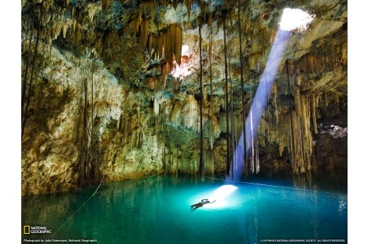
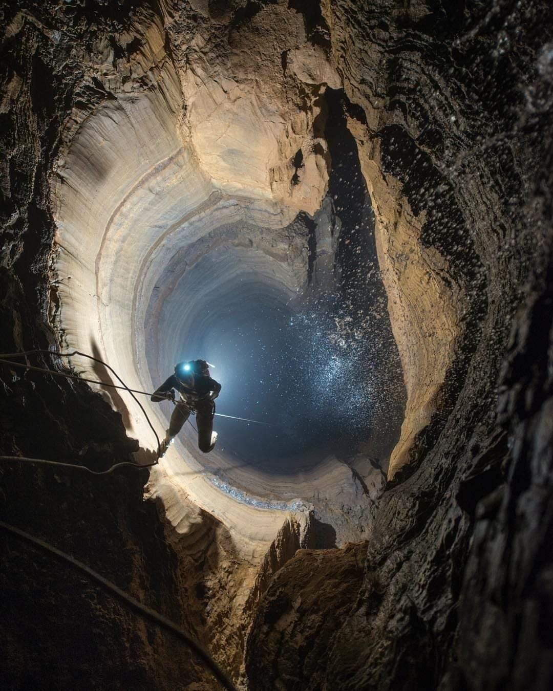

Spelunked! Travel Agency

In order to enjoy spelunking there may be some required gear for certain types of caves. Below is a list of the most common gear that might be necessary. The exact gear needed is still dependent on the type of cave, location, time in the cave, environment in the cave, difficulty level of cave, and the weather.
In addition to the above, the list below is entirely optional, and dependent on many factors.
Finally, the below may be items to bring and keep in your car or mode of transportation to the caving site.
